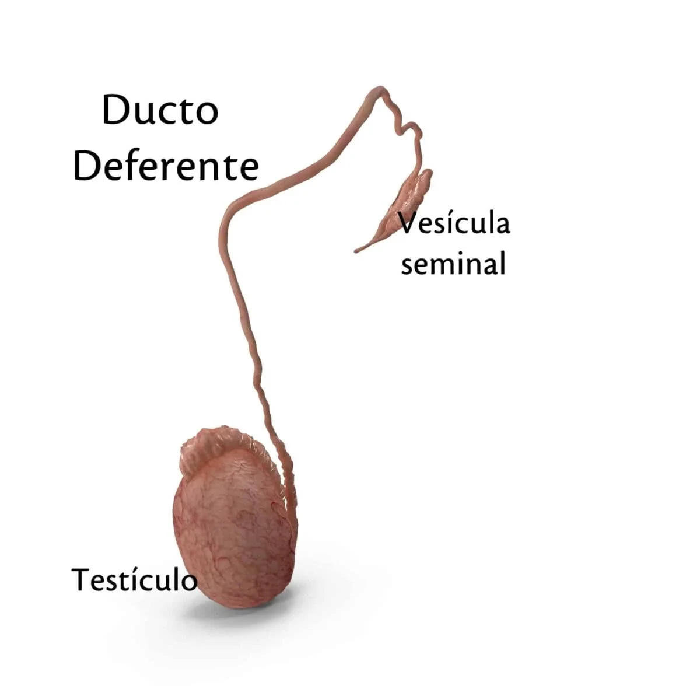
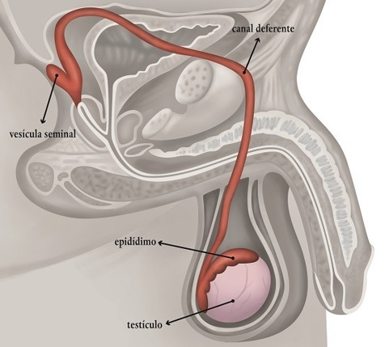

FUNÇÃO
O ducto deferente é o órgão responsável pelo transporte dos espermatozóides durante a ejaculação, atuando como conexão entre epidídimo e ducto ejaculatório.
COMO FUNCIONA?
O ducto deferente inicia na cauda do epidídimo e se expande numa extrutura denominada ampola deferente, localizada ao lado de cada vesícula seminal. Durante a ejaculação, o ducto deferente expande e propulsiona os espermatozóides por meio de contrações peristálticas.